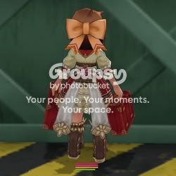

Re: [ECO Sv. Indonesia]สำหรับพูดคุยเซิฟอินโดนีเซีย มาเล่นกัน
555+
เวลเยอะๆ จะได้ หายเร็วๆ
หายไปจากโลกนี้ป่าว สลบคาคอม555+
เอเล ได้รุ้งละนะ 55+
เวลเยอะๆ จะได้ หายเร็วๆ
หายไปจากโลกนี้ป่าว สลบคาคอม555+
เอเล ได้รุ้งละนะ 55+
http://eco.froztic.in.th/archive/ecofanclub/
http://eco.froztic.in.th/archive/ecofanclub/viewtopic.php?f=2&t=82690


zutsuki เขียน:กำลังงงค่ะ โหลดเกมและโหลดแพทเสร็จเรียบร้อยแล้ว แต่พอกรอก id pass มันบอกว่าเรากรอกผิด (ใช้ไอดีเดียวกับที่สมัครไว้ใน wavegame ค่ะ ลองเข้าระบบในหน้านั้นดูเเข้าได้ตามปกติค่ะ แต่เข้าเกมไม่ได้) รบกวนผู้รู้ตอบทีนะคะ
เข้าได้แล้วค่ะ มึนเองลืมกดactive
xiahjunsu เขียน:555+
เวลเยอะๆ จะได้ หายเร็วๆ
หายไปจากโลกนี้ป่าว สลบคาคอม555+
เอเล ได้รุ้งละนะ 55+

รอน เขียน:xiahjunsu เขียน:555+
เวลเยอะๆ จะได้ หายเร็วๆ
หายไปจากโลกนี้ป่าว สลบคาคอม555+
เอเล ได้รุ้งละนะ 55+
ว่าแต่รุ้งจะดีเลย์ 3 นาทีป่าว

Neko เขียน:เควส 666 ของญี่ปุ่นก็มีนะคะ ไม่รู้ว่าเหมือนกันกับของ อินโด หรือเปล่า
แต่รับกับเจ้าหญิง (เด็กผู้หญิงที่อยู่รอบๆ อโคเนีย )
แต่ละเควสจะไปตีมอน ในแมพๆหนึ่งเช่น
แมพ killer bee (แมพที่มี ปูรุรุ สีเหลืองดรอบ ROW )
แต่จะกำหนดว่าให้ ตี มอนสเตอร์ ในแมพนั้น กี่ตัว
จบเควสมาจะได้ของรางวัลเป้น เครื่องประดับ เช่น โบว์ติดผมอันใหญ่ๆสีเหลือง / ที่คาดผมผูกโบว์
รายละเอียดเควส http://ec.gamedb.info/wiki/Quest/6List.html
เดี๋ยวเย็นๆถ่ายรุปมาให้ดูจ้า ^^ เคยไปทำแล้วครั้งนึง
....
แต่เซิฟไทยไม่มีค่ะ ^^''
.....



Neko เขียน:
เซิฟญี่ปุ่นจะรับเควสจาก เด็กในรูป
เควสที่ เนโกะ เคยทำ จะ ให้ไปตี มอนสเตอร์ ในแมพ Killer Bee Hill (ชื่อตามเซิฟไทย)
ตีมอน ตามที่กำหนดไว้น่ะค่ะ
Killer Bee 300 ตัว / Yellow Pururu 200 ตัว / Bow 166 ตัว รวมทั้งหมดก้อ 666 ตัวพอดี
.........
ของรางวัล ที่ได้ big hair ribbon (orange)
( เหมือน big hair ribbon ที่ขายในเมืองฟาอีส แต่ฟาอีสจะขายสีขาว
/ สกิล ตัดเย็บชาวนา เย็บได้สีขาว เช่นกัน )
...................
แต่เดี๋ยว เนโกะ ว่างๆ จะทำกระทู้ Quest Princess 666 อยู่จ้า
(ถ้าไม่ลิมจริงๆนะ )